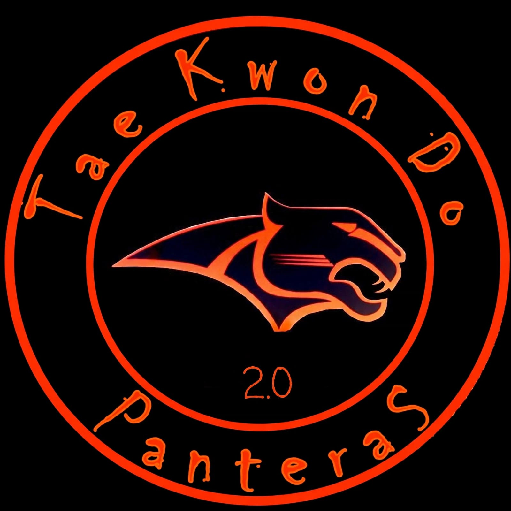
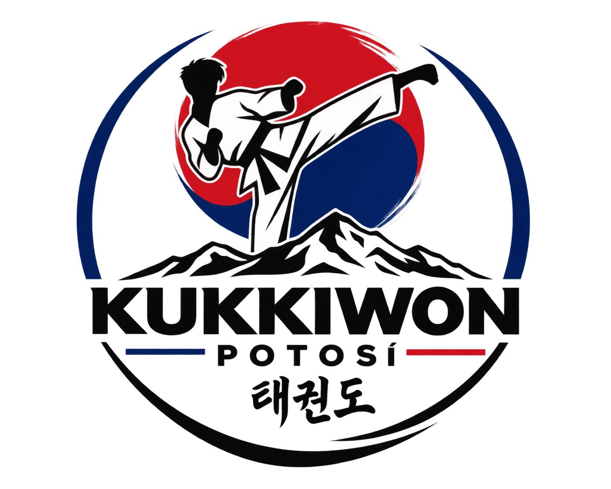
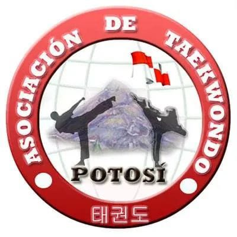
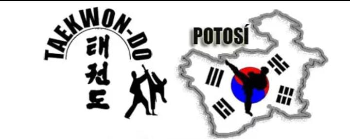

Club Panteras Negras
Club de taekwondo de Potosí enfocado en la formación competitiva de deportistas, con participación en campeonatos departamentales y nacionales, especialmente en la modalidad de combate (kyorugui).
En Potosí existen diferentes clubes y escuelas dedicadas a la enseñanza del taekwondo. Cada uno cuenta con su propia trayectoria, formas de entrenamiento y participacion en las actividades deportivas del departamento.
En esta sección encontrarás información informacion sobre los clubes que forman parte del taekwondo potosino, con el propósito de conocer dónde entrenan, qué ofrecen y cómo puedes acercarte a ellos.

Club de taekwondo de Potosí enfocado en la formación competitiva de deportistas, con participación en campeonatos departamentales y nacionales, especialmente en la modalidad de combate (kyorugui).

Aceademia de taekwondo con participación en competencias departamentales y nacionales, destacando en las modalidades de combate (Kyorugui) y formas (Poomsae).

Espacio público de iniciación y formación deportiva impulsado por la Unidad de Deportes, que promueve la práctica del taekwondo en los complejos municipales Las Delicias y Pampa Ingenio.

Club con trayectoria en el taekwondo potosino, reconocido por su participación en competencias departamentales. Destacó en la Copa Potosí 2023 al obtener el primer lugar en la modalidad de Poomsae.